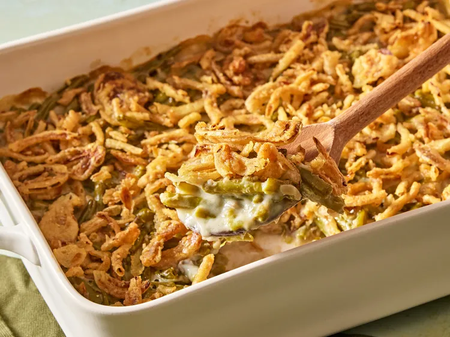

Home
Green Bean Casserole

This green bean casserole recipe, with canned beans and French-fried onions,
is a holiday favorite with my family and so easy to make. The beloved dish has
been a Thanksgiving tradition since it was created in 1955 by Dorcas Reilly, a
chef from the Campbell's Test Kitchen. Campbell's printed the recipe right on the
label of their soup cans, and the rest is history.
Ingredients
- 2 (15-ounce) cans cut green beans, drained
- 1 (10.5-ounce) can condensed cream of mushroom soup
- ¾ cup milk
- 1 (2.8-ounce) can French fried onions, divided
- salt and pepper to taste
Steps
- Preheat the oven to 350 degrees F (175 degrees C).
- Mix green beans, condensed cream of mushroom soup, milk, and half of the fried onions together in a 1.5-quart casserole dish.
- Bake in the preheated oven until bubbly, about 25 minutes.
- Sprinkle remaining onions on top; return to the oven for 5 minutes. Season with salt and pepper to taste. Let rest for a few minutes before serving.